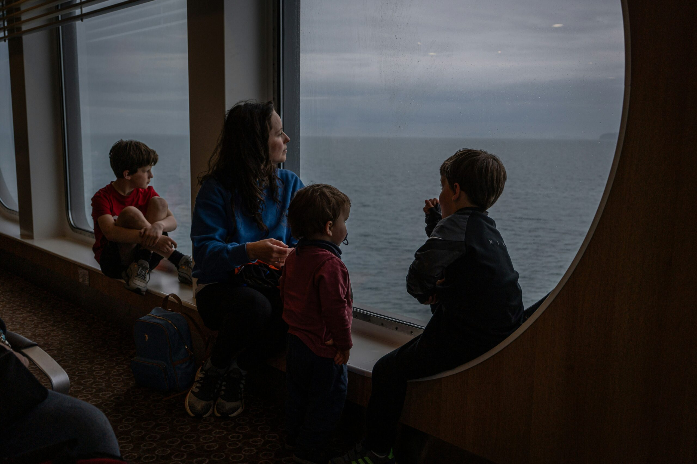
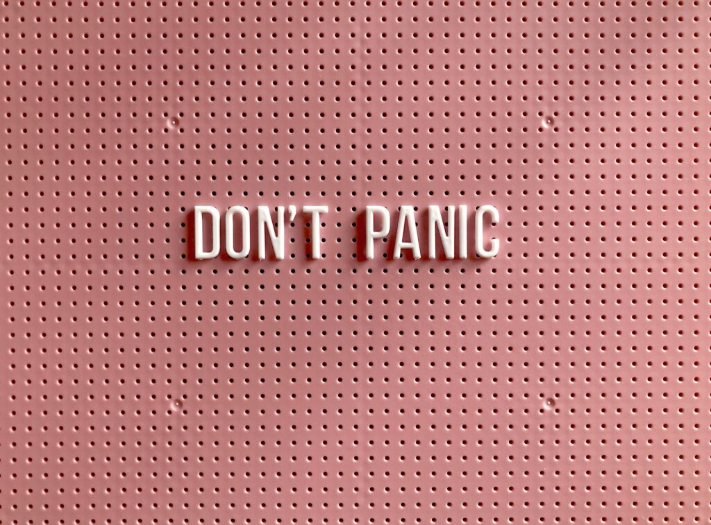

Helen Choi
Me gusto mucho el tema del taller y el contenido, además compartir experiencias con amigas extranjeras y sentirnos más arropadas.
Talleres enfocados al autoconocimiento en los que te aportaré herramientas para tomar consciencia de dónde y cómo te encuentras. Descubras tus fortalezas y capacidades para conseguir aquello que pretendas en tu vida de expatriación.
Duración: 90/120 minutos.

Parar y reparar (parar dos veces).
En este taller además de parar y tomarte un respiro como en un fin de semana largo o unas vacaciones, harás una segunda parada más profunda.
Para conocerte e identificar el tipo de vida que estas llevando y reconocer (conocer dos veces), si realmente es la que quieres. Pondrás una pausa interna a tu actividad, tus pensamientos y sensaciones.
Vas a verlo desde otra perspectiva, dándote cuenta de que eres el auténtico capitán de tus travesías. Hay que seguir la hoja de ruta que tu escribiste, no la que otros han escrito, ya sea o no sea para ti.
La rueda de la vida es una herramienta visual de coaching que facilita la obtención de una visión gráfica de los aspectos que componen nuestra vida y el grado de satisfacción y equilibrio respecto a ellos. Los pilares de su filosofía son el desarrollo personal y el logro de los objetivos, la adecuada gestión del tiempo y el disfrute de los éxitos.
Esta herramienta sirve para:

Aprende a gestionar el estrés y olvídate de su existencia.
¿Sabes que el estrés es considerado la enfermedad del s.XXI? Por ello que necesitamos más recursos que nos ayuden a diagnosticarlo a tiempo y gestionarlo antes de que sea tarde.
Este taller está basado en más de 35 años de investigación científica del Dr. Simon Dolan y su equipo.
El estrés es uno de los responsables directos de las enfermedades psíquicas y físicas más comunes y mortales que afectan a la Humanidad. En las expatriaciones, el desequilibrio entre las aspiraciones y expectativas, frente a la realidad en la que nos encontramos, acompañado de las exigencias personales, familiares y sociales en el nuevo destino, lo que aumenta el nivel de estrés. Las características culturales, los sistemas de valores personales y los procesos cognitivos que actúan sobre los comportamientos, también son determinantes del estrés.
Como antídoto al estrés tenemos la resiliencia, siendo esta la capacidad para adaptarnos y recuperarnos cuando las cosas no salen como estaba planeado.
En los procesos de expatriaciones es clave conocer tanto los signos y síntomas que te está causando el estrés como las fuentes que provocan tu estrés para poder actuar en consecuencia y conseguir eliminarlo o al menos reducirlo. Soy Certificada Especialista Internacional en Mapa del Estrés. Poderosa herramienta mediante la cuál te acompaño para que descubras de dónde procede y cómo minimizarlo.
Con este taller conseguirás:
« El estrés es una enfermedad progresiva y silenciosa causada por las presiones y exigencia del mundo en el que vivimos, de la sociedad y de uno mismo »Simon L. Dolan. Doctor en psicología del trabajo y Catedrático en ESADE.
¿Sientes que no consigues despegar? ¿que tus días pesan?
Te compartiré las herramientas imprescindibles para elevar tu energía en el cambio hacia aquello que persigues.
La autoestima es tan importante como difícil de mantener cuando quieres alzar el vuelo y después mantenerlo. Tienes que saber valorarte, reconocer tus logros y tus capacidades. Descubrir cuáles son tus fortalezas te ayudará a alcanzar esas metas que te propones.
La autoestima se construye a través de la autoconfianza. Cuando vences tus bloqueos, y eres capaz de hacer aquello que antes no podías, alimentas tu autoconfianza y tu autoestima aumenta. De esta manera pones en marcha una rueda que crea el movimiento necesario para avanzar de forma imparable.
Cuando te encuentras en un nuevo destino, sufres una falta identidad con respecto a tu nueva situación. Esto ocasiona una bajada de tu autoconfianza y como consecuencia un descenso en tu autoestima.
Con este taller vas a conseguir potenciar, mediante ejercicios prácticos y reflexivos, tus capacidades y cualidades, valorar tus logros y desarrollar tus habilidades de autovaloración, autoconocimiento y autoconfianza para que alcances reforzar tu autoestima. Todo ello te dará una nueva identidad que te hará imparable ante la consecución de tus objetivos.
Los beneficios de tener una autoestima alta son:
Me gusto mucho el tema del taller y el contenido, además compartir experiencias con amigas extranjeras y sentirnos más arropadas.
Que no estoy sola, está bien sentirse triste y tener días malos. Me encantaron las herramientas para superar esas situaciones.